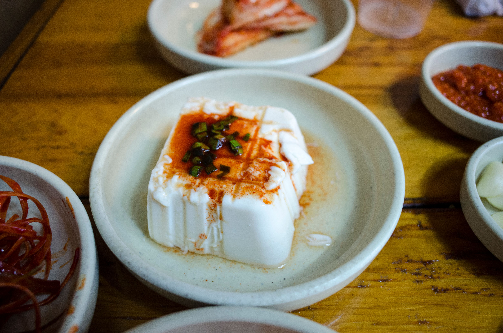

Silky Tofu

Silky Tofu Traditional
Silky Tofu was found in China. It is a traditional food from processing a soybean.
The texture is very soft and smooth. It is a very healthy food since it is made from soybean. It is also a good source of protein.
Ingredients
- Silky Tofu
- Himalayan Salt
- Water 100ml
- Soy Sauce
Steps
- Prepare the silky tofu
- Prepare the soy sauce
- Prepare the water and salt
- Pour the soy sauce, water and salt on top of the tofu and enjoy!
Home